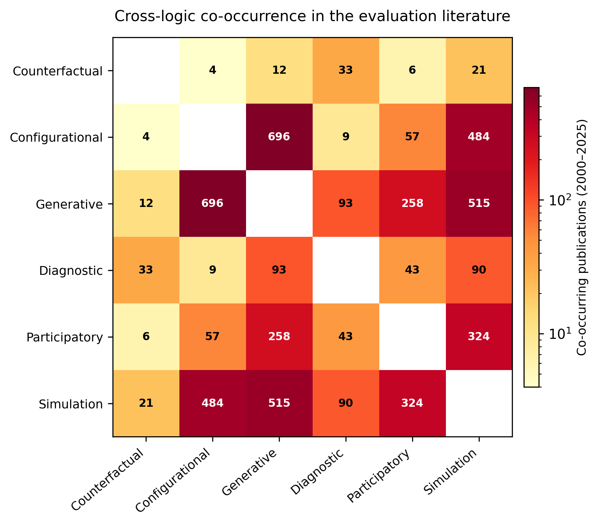

11 Mixed-Method Integration Across Logics
Single-logic evaluations answer one type of causal question. A SCED estimates whether the intervention changed the outcome. A process trace explains how. A QCA identifies which conditions produce the outcome. Most evaluation commissioners need answers across these question types, and that requires combining logics. This chapter examines how the six logics covered in Part II are combined in practice, identifies three integration designs, and proposes quality criteria for multi-logic evaluation.
11.1 Patterns of integration in the literature
Before prescribing integration protocols, it is worth asking which logics are actually combined in the published literature. Figure 11.1 presents a co-occurrence analysis of evaluation method terms in publications indexed by OpenAlex between 2000 and 2025. Each cell reports the number of publications that mention methods from both logics.

Three patterns stand out. First, the configurational–generative pairing dominates. Qualitative comparative analysis and process tracing co-occur in over 500 publications, reflecting the well-established “nested analysis” tradition in comparative politics and policy research. QCA identifies configurations associated with the outcome; process tracing investigates the mechanisms within selected cases.
Lieberman (2005) formalised the nested analysis strategy, combining large-n statistical analysis with small-n case studies selected on the basis of the statistical results. Schneider & Rohlfing (2013) extend this to QCA, proposing formal protocols for combining set-theoretic analysis with process tracing.
Second, simulation methods co-occur with nearly every other logic. System dynamics and agent-based modelling appear alongside configurational, generative, and participatory methods, consistent with this book’s argument that simulation is a complementary tool rather than a standalone logic (Chapter 9). Third, counterfactual methods are strikingly isolated. SCEDs, N-of-1 trials, and randomisation inference rarely co-occur with methods from other logics. The counterfactual tradition has developed largely in parallel with the theory-based and configurational traditions. This isolation is a gap, not a feature. The decision matrix in the previous chapter (Chapter 10) suggests several productive pairings that the literature has not yet explored in depth, including SCED with process tracing and randomisation inference with QCA.
11.2 Integration designs
Three design types structure the combination of logics within a single evaluation.
11.2.1 Sequential integration
In a sequential design, one logic precedes and informs the other. The most common pattern is configurational logic first, then generative logic. A QCA across fifteen programme sites identifies three configurations associated with improved outcomes. The evaluator then selects one or two cases from each configuration for process tracing, testing whether the mechanisms posited by the theory of change actually operate in those contexts. The ordering matters: the configurational analysis constrains case selection, ensuring that the process traces are not drawn from convenient cases but from analytically informative ones. The reverse sequence is also possible. An evaluator conducts process tracing in a small number of cases, identifies candidate mechanisms, and then uses QCA across the full set of cases to test whether those mechanisms are associated with the outcome under specific conditions.
11.2.2 Concurrent integration
In a concurrent design, two or more logics operate in parallel on the same cases during the same evaluation period. A behaviour-change pilot uses SCEDs to estimate the intervention effect for each participant while simultaneously collecting Most Significant Change stories at regular intervals. The counterfactual logic provides an effect estimate; the participatory logic captures outcomes that the quantitative measures miss. Integration happens at the interpretation stage. The evaluator examines whether the MSC stories align with the SCED effect estimates, and whether the stories reveal mechanisms or contextual factors that explain variation across participants.
11.2.3 Nested integration
In a nested design, one logic is embedded within another. A contribution analysis maps the overall contribution story for a governance reform programme. Within that contribution story, specific mechanism steps are assessed using Bayesian process tracing with diagnostic tests. The generative logic provides the structural framework; the diagnostic logic provides the evidential rigour for critical causal claims within that framework. The simulation logic can be nested within the diagnostic logic in turn: an agent-based model generates the probability estimates that the diagnostic tests require (Chapter 9).
Befani & Mayne (2014) demonstrate how process tracing and contribution analysis can be formally combined in a nested design, with diagnostic tests providing the evidential foundation for critical links within the contribution story.
Table 11.1 summarises the three types.
| Design | Sequencing | When to use | Coordination challenge |
|---|---|---|---|
| Sequential | Logic A precedes and informs Logic B | When one logic constrains case selection or hypothesis formation for another | Timing: Logic A must be complete before Logic B begins |
| Concurrent | Logics A and B operate in parallel | When different logics address different questions on the same cases | Interpretation: findings must be synthesised across logics |
| Nested | Logic B is embedded within Logic A | When one logic provides the framework and another provides evidential depth at specific points | Coherence: the embedded logic must be compatible with the framing logic |
11.3 Quality criteria for integration
Three criteria distinguish rigorous multi-logic integration from ad hoc method mixing.
The first criterion is coherence. The combined logics must rest on compatible assumptions. Generative and diagnostic logics combine naturally: both operate within a mechanistic ontology, and the diagnostic logic provides a formal test for the evidence that the generative logic identifies. Configurational and generative logics also combine well: QCA identifies patterns, and process tracing explains them. Some pairings are less natural. QCA’s deterministic set-theoretic logic sits uneasily with Bayesian probabilistic updating. The evaluator who combines these must be explicit about which logic governs which claim and must avoid treating configurational necessity claims as probability estimates.
The second criterion is transparency. The integration rationale must be reported explicitly. A multi-logic evaluation report should state which question each logic addresses, why that logic was chosen, and how the findings from different logics are brought together. Too many mixed-method evaluations combine methods without explaining the logic of combination. The result is a collection of findings rather than an integrated causal account.
The third criterion is the treatment of divergence. When logics disagree, the disagreement is informative, not a failure. A process trace may support a mechanism that a QCA does not find to be necessary. This divergence suggests that the mechanism operates but is not the only path to the outcome. A SCED may show no effect while an MSC story reports meaningful change. This divergence suggests that the quantitative measure is not capturing what changed, or that the change is real but not attributable to the intervention. The evaluator should report divergence openly and use it to refine the causal account rather than suppress it.
11.4 Looking ahead
This chapter and the preceding one have addressed method selection and method combination. The next chapter turns to a different dimension of quality: biases, transparency, and reporting standards that apply across all small-n methods.